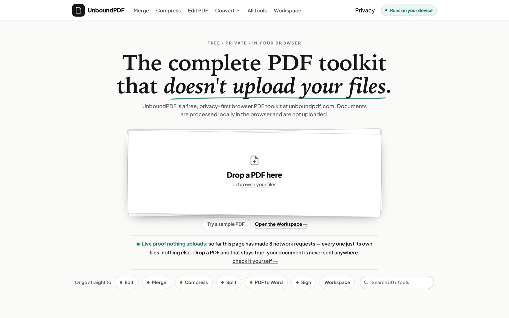

UnboundPDF is a free website with 54 PDF and image tools: merge, compress, edit text, OCR, redact, sign, convert and more. Every tool runs inside the visitor's browser tab, so documents are never uploaded and no account is needed. I built it to make a privacy claim checkable instead of trusted: a strict browser security policy, a published test anyone can repeat, and release gates that run before engine and asset changes ship.
The problem
Most online PDF tools upload your file to someone else's server before they do anything with it. Contracts, IDs and bank statements are exactly the files people hesitate to send. A tool that never receives the file removes that question, but then editing, OCR and redaction have to work on the visitor's own device, and the privacy claim has to be something a stranger can check.
- Nothing may leave the device: no upload endpoint, no third-party scripts or hosts, no file contents in logs or analytics.
- All work happens in a browser tab on whatever laptop or phone the visitor owns, so memory and speed are not mine to control.
- Free to use: no account, no watermark and no usage cap on any tool.
- Every public claim must be checkable: counts come from code, and sizes and timings carry their date and browser.
How it works
Drop the file
The browser reads the file into the tab. There is no upload endpoint, and the page's security policy only lets it connect to its own address.
Check the device
Before a long job, a shared runtime compares the document with the device and shows what it found. Progress is a phase and a counter, never an invented percentage.
Work in the tab
pdf.js reads and renders, pdf-lib writes, and Tesseract and ONNX Runtime run as WebAssembly where a tool needs them. A Stop button ends the run and leaves the original file untouched.
Verify the output
Redact PDF re-reads the finished file to confirm the text is gone. Guided workflows check the produced bytes before showing a receipt, and the Workspace records size, page count and SHA-256 for every step.
Download or keep
The result downloads from the same tab. In the Workspace, documents stay in the browser's own storage, encrypted, and can be deleted at any time.
Check the claim yourself
The Privacy Lab walks anyone through the Network panel check and publishes dated results. The Document Passport is self-issued, so it proves the steps are intact and in order, not who ran them.
What I built
54 tools in the browser tab
Merge, split, compress, convert, redact, sign, OCR, repair and compare, plus image tools and a legal pack. They run on open-source engines (pdf.js, pdf-lib, Tesseract.js, ONNX Runtime) inside the page.
An editor that keeps the document's fonts
Click a paragraph and retype it; the text is written back in the font the PDF already carries and the lines below move to make room. Scans become editable after on-device OCR, and the editor says when it had to substitute a font.
A Workspace with a Document Passport
Run tools in any order on one file: each run makes a named copy and records its SHA-256, and a verifier recomputes the whole chain. Documents stay in the browser's own storage, encrypted with AES-GCM, and can be deleted at any time.
A German version
14 German pages and German tool screens, a Portal Ready workflow that fits photos, HEIC files and PDFs under an upload portal's size limit, and German ID patterns with check-digit validation in Redact PDF. Redact PDF also has a bank-statement mode for the Jobcenter, and PDF Form Doctor explains why a form only opens in Adobe Reader.
A release gate and a checked deploy
Any change to engine or asset code must pass one command first: every tool audited in three desktop and two phone browser engines, full-site page sweeps, offline, registry and claims checks. Each deploy is a backup, a copy from a clean worktree, a checksum sweep and a walk of the live site.
Proof, with dates
Three checks that a file never leaves the tab: a Network-panel run on a PDF with an embedded image, an offline test in the release gate (server switched off, browser offline, two real PDFs merged), and a scan of every cache entry for a 48-byte sample of each input.
0 requests of any kind while Extract Images processed the PDF (2026-07-23, Chromium). The offline merge completes and its output reopens; that test is part of every full gate run. No input bytes were found in any cache entry. Only Merge PDF is probed offline; the other 53 tools are recorded as cached but not verified offline.
A pass/fail benchmark against fourteen written requirements: a 12-document corpus (300- and 1,000-page documents, scans, encrypted and damaged files) driven through the real interface in Chromium, Firefox and WebKit, with every output re-opened in poppler, an independent PDF reader.
124 runs: each completed or was refused cleanly with a named reason, none modified its input, and 79 of 79 output files re-opened in poppler. Nine of the fourteen requirements passed. The five that did not are published on the same page: first-party workers (fail), pre-crash detection (unproven), the benefit of low-memory mode (unmeasurable), page responsiveness (partial, desktop only) and output checking by every tool (partial).
The ship gate: a tool audit for every registered tool in Chromium, Firefox, WebKit and two phone engines, full-site page sweeps at desktop and phone width, plus offline, round-trip, registry-drift and claims checks. It runs in full for engine and asset changes; copy-only changes go through faster sweeps.
Latest release (v211, 2026-10-06): the full gate finished green (212 sections in its log). The tool audit passes 52 of 54 on each engine run; the other two need a fixture file missing from the build machine, which the record names as a documented allowance, not a pass. Earlier gates caught real defects before deploy: four stacked mode cards pushing the page below the fold on a 390 px phone (v210) and an input silently dropped when handed to a tool during engine load (2026-08-28).
Deploy proof for each release: backup, copy from a clean worktree without deleting anything, checksum sweep of the served files against the build, key URLs re-fetched through the CDN, and a live browser walk with the network log open.
v206, the German release: the checksum sweep found 0 differences across 607 files, 16 key URLs returned 200 on the new version only, and the served bytes of the key pages and scripts matched the build. A live walk in Chromium (desktop) and WebKit (phone) recorded 0 page or console errors and no off-origin or non-GET requests.
A regression test that must fail on the old code. Remove Background froze the browser tab because the model ran on the page's main thread; the cause was measured first, not assumed.
Longest freeze before the fix: 19,794 ms in Firefox and 1,109 ms in Chromium. The model run now stays off the main thread. The new test (maximum stall 1,000 ms) fails on the old engine at 19,265 ms and passes on the fix. On the live site the longest freeze is now 211 ms in Firefox, 57 ms in Chromium and 53 ms in WebKit. The model run itself is not faster, about 19 to 20 seconds in Firefox.
Testing PDF Form Doctor against four real public German forms after the synthetic fixtures had passed.
Two of the four forms crashed the tool because they use AES-128 encryption, which the AES-256 synthetic fixtures did not cover. Fixed; the new fixtures fail on the old engine, the suite passes 208 of 208, and on the live site the child-benefit form is now diagnosed with 0 errors. None of the four was a pure dynamic-XFA form, so that filler stays off.
In numbers
- PDF and image tools in the live registry; the tools index, press kit and capability file are generated from it29 Oct 2026
- 54
- requests of any kind recorded while Extract Images processed a PDF, in the Network-panel check anyone can repeat23 Jul 2026
- 0
- benchmark runs across Chromium, Firefox and WebKit; none crashed or hung, and 79 of 79 output files re-opened in an independent PDF reader15 Aug 2026
- 124
- checks in the Workspace test suite, none failing (471 at the 2026-08-27 release)5 Oct 2026
- 511
Decisions
No upload path at all, and a security policy that enforces it.
A privacy page is a promise; a browser policy is a mechanism. The site has no document-upload endpoint, its Content-Security-Policy only lets the page connect back to its own address, and no form posts anywhere. It is also the one thing upload-based tools cannot easily copy.
Trade-off: Speed and memory depend on the visitor's device and browser. The same 119 MB scan compressed to 34% of its size in Chromium, 39% in Firefox and 57% in WebKit, and OCR of a 100-page scan took 94 seconds in Chromium but 19.7 minutes in Firefox. So the site publishes no single 'compress by X%' figure.
Serve OCR and the cutout model from the site itself, with no analytics.
The only network traffic should be the site's own program code. That keeps the Network-panel check simple and lets the security policy block every other host. The Tesseract engine and the portrait-cutout model are vendored, fonts are self-hosted, and the privacy page states there are no analytics, tracking pixels or advertising cookies.
Trade-off: The first OCR run downloads about 14 MB (English) and the first background removal about 38 MB, once, from the site. With no analytics I cannot see what people do inside a tool; the host keeps only standard access logs, never file contents.
Never degrade a document silently: flattening and keeping the original are explicit choices.
An audit of the live editor on 2026-08-24 rated it 6/10. By default it embedded the unedited original inside the output while the result said the original text was removed, and some saves could turn a page into a lower-quality image without asking. Now the editor shows whether a page is native text or OCR, reports font reuse or substitution, keeps scan image bytes sharp by default, asks before any destructive rebuild, and makes the recoverable original opt-in.
Trade-off: More choices and disclosure for the user, and old pixels in a scan are only permanently removed if the user picks the explicit 144 DPI rebuild.
Publish only what was measured, and derive every count from one registry.
Hand-kept numbers rotted: the hub once said Convert 6 while the registry said 7, and an early memory estimator (55x the input size) came from one measurement and failed on a ten-fold range of inputs. So counts are computed from the tool registry, the public capability file refuses to build if it contradicts the shipping code, and sizes are written as observed completions, never as limits.
Trade-off: The homepage says '50+ tools' (rounded down by code) instead of 54, a first-party worker that failed its own benchmark ships switched off instead of being advertised, and there is no 'handles any size' claim.
Look inside



Limits, honestly
- Performance is measured on desktop engines on one machine (Apple M4, 16 GB). Phones were checked by hand on older builds, and nothing is measured on mid-range laptops, Windows or Linux. Published sizes are things I watched finish, not limits.
- Output fidelity has edges. The editor reuses the document's embedded fonts when it can and says so when it must substitute one, OCR edits are approximate, and signing places drawn or typed signature images, not certificate signatures.
- The German version is new: 14 pages and tool screens, reviewed by an AI model but not yet by a native speaker. The Jobcenter bank-statement mode has only been tested on synthetic statements.